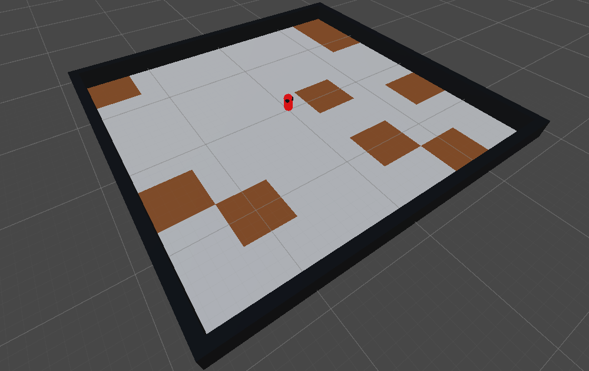

Cleaner
In this exercise, you will need to make an agent with any needed sensors or actuators to keep a set of floor tiles clean. To do this, it is recommended you make and attach a controller to your agent.

Floor
A Floor component is attached to every floor tile in the scene. Given a chance value, every step a tile may randomly become dirty. You should design a sensor designed to detect dirty floor tiles, and an actuator to clean them.